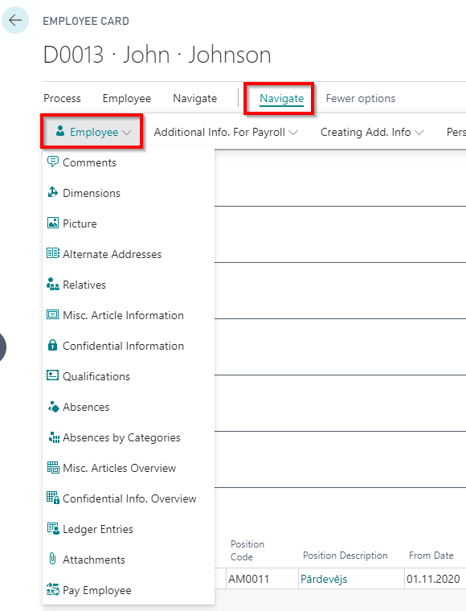
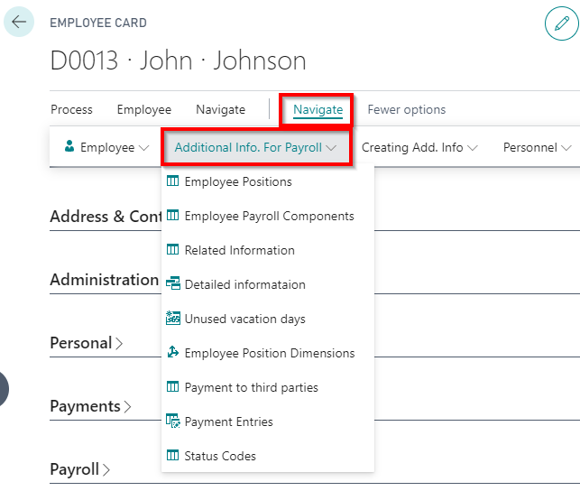
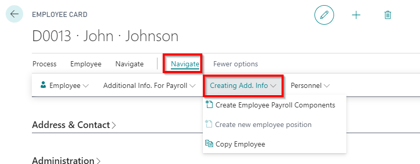

Additional employee information in the employee card
  
Qualifications
A qualification list of employees can be maintained in the system. Based on this, it is possible to keep track of when trainings and briefings need to be repeated (for example, using a report Employee qualifications).
Qualifying codes are entered in separate line, indicating the freely selected code () and a description ( ). If in field Qualified Employees (
). If in field Qualified Employees ( ) is a note Yes, then by clicking on the link you can view a list of employees assigned this particular qualification.
) is a note Yes, then by clicking on the link you can view a list of employees assigned this particular qualification.

Employee's qualification
Once all the information is entered, when you can define the employee's qualifications. Opens the required employee card and selects in employee card toolbar Related - Employee - Qualifications.

| Field Name | Description |
|---|---|
| Qualification Code | Code from the register Qualifications.. |
| From date | Date of qualification. |
| To date | Qualification due date. |
| Type | Select the origin: Internal, External, from a Previous Position. |
| Description | Description of the type of education, filled in from the qualification register. |
| Institution/Company | Name of the external qualification institution of origin. |
| Comment | A note that a comment has been added to the post. |
Copy Employee
The copying function is convenient to use if the employee after termination has been employed again in the company. However to avoid possible errors (For example, in the calculation of the average gain, SRS reports), it is advisable to create a new employee card. To start a copying, you should first create a new employee card. In the employee card's toolbar press on Related - Creating Add. Info -Copy Employee. In the Options section must be selected Source Employee No., As well as note some information would like to copy.

Employee's Status Codes
In the Employee's cards toolbar Related - Additional Info. For Payroll a function Status codes is available, where you can view and edit the social status codes associated with the employee, and on this basis the report Employee Social Sign Codes is prepared.
The social status code should be entered through the labor contract card, Employment personnel order card, Termination personnel order card un Position change order card. Status codes for maternity leave and non-payable vacation can be defined in Causes of Absence card's fields Absence Start Status Code and Work Restart Status Code.
Attachments
If necessary, to the employee card can be added files of any format (for example, CV, diplomas and other documents). Functionality is available for employee cards toolbar Employee - Attachments.